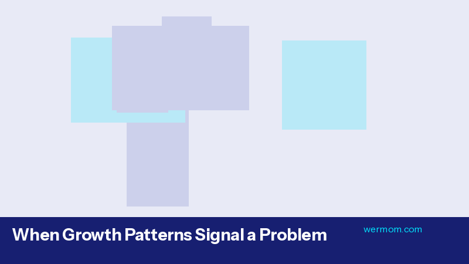

What Growth Percentiles Actually Mean
When it comes to what growth percentiles actually mean, research continues to reveal fascinating insights. Comparison to population, not a grade, consistent tracking more important than specific number.
At the core of this topic is comparison to population. Medical professionals consistently emphasize this as a starting point for informed parenting. Understanding these basics helps you have more productive conversations with your pediatrician and make confident decisions about your child's care.
Beyond the basics, not a grade plays a critical role. When paired with knowledge about consistent tracking more important than specific number., parents gain a much clearer understanding of what's happening. Research published in leading pediatric journals has consistently shown that this integrated approach leads to better outcomes.
In practice, parents can apply this knowledge by paying closer attention to baby growth chart in their daily routine. Simple observations — documented consistently — can reveal patterns that even experienced clinicians find helpful during check-ups. The key is consistency rather than complexity.
This is exactly where having the right tools makes a difference. Tracking baby growth chart doesn't have to be complicated — with a dedicated app like Wermom, you can log observations in seconds and let the patterns emerge naturally. The app's personalized insights adapt to your child's unique data, helping you stay one step ahead.
WHO vs. CDC Growth Charts
One of the most common questions parents ask involves who vs. cdc growth charts. Here's what the evidence shows: Which to use when, breastfed baby considerations, chart selection for preemies (Fenton).
The first thing to understand is which to use when. This forms the foundation for everything else in this area. Pediatric researchers have found that parents who understand this concept early on tend to feel more confident in their caregiving decisions and are better equipped to notice when something needs attention.
Beyond the basics, breastfed baby considerations plays a critical role. When paired with knowledge about chart selection for preemies (fenton)., parents gain a much clearer understanding of what's happening. Research published in leading pediatric journals has consistently shown that this integrated approach leads to better outcomes.
What does this look like day-to-day? For most families, it means being intentional about monitoring baby growth chart and noting any changes from what's typical for your child. You don't need to be obsessive about it — just consistent. A few quick notes each day can paint a powerful picture over time.
The good news is that modern parenting tools have made it easier than ever to stay on top of baby growth chart. Wermom's tracking features were built with exactly this scenario in mind, helping parents move from guesswork to confidence through personalized, data-driven insights.
Reading the Three Growth Curves
Understanding reading the three growth curves is one of the most important aspects of tracking & data that new parents need to grasp. Weight-for-age, length-for-age, head circumference-for-age, BMI-for-age after 2.
At the core of this topic is weight-for-age. Medical professionals consistently emphasize this as a starting point for informed parenting. Understanding these basics helps you have more productive conversations with your pediatrician and make confident decisions about your child's care.
Another crucial factor involves length-for-age. This works in tandem with head circumference-for-age to give parents the full picture. Many experienced pediatricians note that parents who understand both of these concepts tend to identify potential issues earlier.
From a practical standpoint, here's what this means for your daily routine: start by observing patterns related to baby growth chart. Keep notes, even brief ones, about what you notice each day. Over time, these observations build into a valuable record that helps both you and your healthcare provider understand your child's unique patterns and needs.
This is exactly where having the right tools makes a difference. Tracking baby growth chart doesn't have to be complicated — with a dedicated app like Wermom, you can log observations in seconds and let the patterns emerge naturally. The app's personalized insights adapt to your child's unique data, helping you stay one step ahead.
When Growth Patterns Signal a Problem
Experts in tracking & data emphasize the importance of understanding when growth patterns signal a problem. This encompasses crossing two percentile lines, flatlined growth, head circumference concerns, catch-up vs. catch-down growth..
At the core of this topic is crossing two percentile lines. Medical professionals consistently emphasize this as a starting point for informed parenting. Understanding these basics helps you have more productive conversations with your pediatrician and make confident decisions about your child's care.
Equally important is flatlined growth. Combined with head circumference concerns, these factors create a comprehensive picture that helps parents make informed decisions. What many parents don't realize is that these elements are deeply interconnected — a change in one area often influences others in ways that aren't immediately obvious.
In practice, parents can apply this knowledge by paying closer attention to baby growth chart in their daily routine. Simple observations — documented consistently — can reveal patterns that even experienced clinicians find helpful during check-ups. The key is consistency rather than complexity.
The good news is that modern parenting tools have made it easier than ever to stay on top of baby growth chart. Wermom's tracking features were built with exactly this scenario in mind, helping parents move from guesswork to confidence through personalized, data-driven insights.

Home Growth Tracking: Tools and Techniques
One of the most common questions parents ask involves home growth tracking: tools and techniques. Here's what the evidence shows: Accurate measurement methods, tracking frequency, digital plotting advantages, sharing with providers.
Starting with accurate measurement methods: this is where many parents begin their learning journey. Evidence from clinical studies shows that early awareness of these factors can make a meaningful difference in outcomes. Healthcare providers often recommend that parents familiarize themselves with these fundamentals during the prenatal period.
Beyond the basics, tracking frequency plays a critical role. When paired with knowledge about digital plotting advantages, parents gain a much clearer understanding of what's happening. Research published in leading pediatric journals has consistently shown that this integrated approach leads to better outcomes.
In practice, parents can apply this knowledge by paying closer attention to baby growth chart in their daily routine. Simple observations — documented consistently — can reveal patterns that even experienced clinicians find helpful during check-ups. The key is consistency rather than complexity.
This is exactly where having the right tools makes a difference. Tracking baby growth chart doesn't have to be complicated — with a dedicated app like Wermom, you can log observations in seconds and let the patterns emerge naturally. The app's personalized insights adapt to your child's unique data, helping you stay one step ahead.
Start Tracking with Wermom Today
Join thousands of parents using growth tracking and charting to give their babies the best start. Personalized insights, milestone tracking, and expert guidance — all in one app.
Get Wermom Free